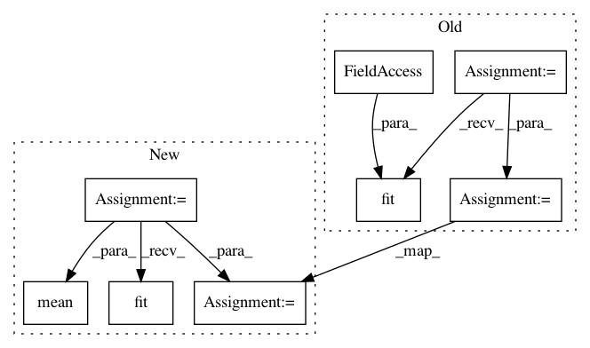

ea5d191f7f71b6fa927a96ef4e785c762a54d5db,examples/decoding/plot_oasis_vbm_space_net.py,,,#,14
Before Change
////// Fit and predict //////////////////////////////////////////////////////////////////////////////////////////////////////////////////////
from nilearn.decoding import SpaceNet
decoder = SpaceNet(memory=memory, screening_percentile=10, verbose=1,
mask=nifti_masker, n_jobs=14)
////// Fit and predict
decoder.fit(new_images, age)
coef_niimg = decoder.coef_img_
age_pred = decoder.predict(new_images).ravel()
////// Visualization //////////////////////////////////////////////////////////////////////////////////////////////////////////////////////////
import matplotlib.pyplot as plt
After Change
import matplotlib.pyplot as plt
from nilearn.plotting import plot_stat_map
for penalty in ["tv-l1", "smooth-lasso"]:
decoder = SpaceNetRegressor(memory="cache", penalty=penalty, verbose=2)
decoder.fit(X_train, y_train) // fit
coef_img = decoder.coef_img_
y_pred = decoder.predict(X_test).ravel() // predict
mse = np.mean(np.abs(y_test - y_pred))
////// Visualization //////////////////////////////////////////////////////////////////////////////////////////////////////////////////
// weights map
background_img = X[0]
In pattern: SUPERPATTERN
Frequency: 4
Non-data size: 8
Instances
Project Name: nilearn/nilearn
Commit Name: ea5d191f7f71b6fa927a96ef4e785c762a54d5db
Time: 2015-07-28
Author: elvis.dohmatob@inria.fr
File Name: examples/decoding/plot_oasis_vbm_space_net.py
Class Name:
Method Name:
Project Name: jhfjhfj1/autokeras
Commit Name: b115f1f721594772ca12e02dc388b1b210a2ee73
Time: 2018-05-02
Author: jin@tamu.edu
File Name: experiments/mnist.py
Class Name:
Method Name:
Project Name: nilearn/nilearn
Commit Name: ba96096f784a73ce0d14b0b72e757c0fdbf331db
Time: 2015-07-28
Author: elvis.dohmatob@inria.fr
File Name: examples/decoding/plot_oasis_vbm_space_net.py
Class Name:
Method Name: